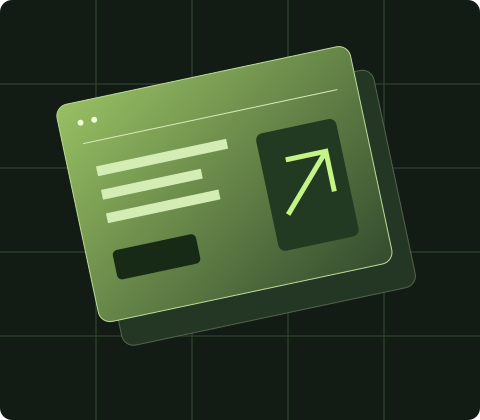

FROM BROWSER TO BUILDER
Start with
a section.
Make it yours.
A small, editable starting point for your next idea. Capture a section, inspect the details, and keep building.
Explore the details ↗
A small, editable starting point for your next idea. Capture a section, inspect the details, and keep building.
Explore the details ↗